AWAITING_USER_VISUAL_APPROVAL
同一查看器、同类型同尺寸、同视角与光照。截图来自真实 Three.js 页面。
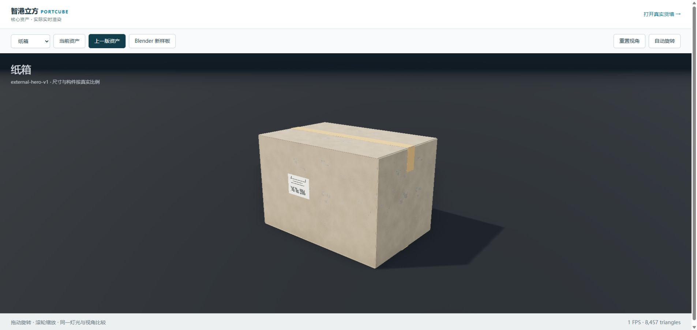
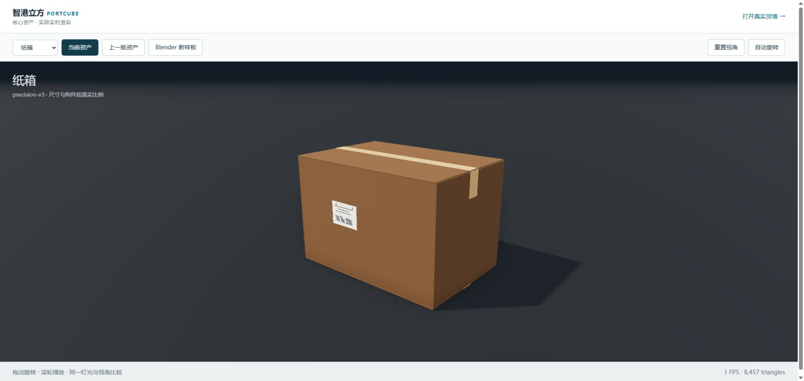
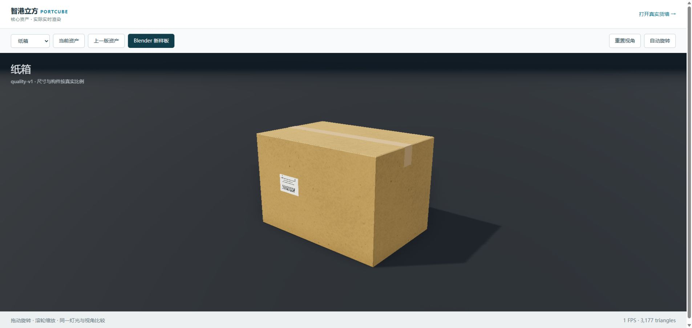
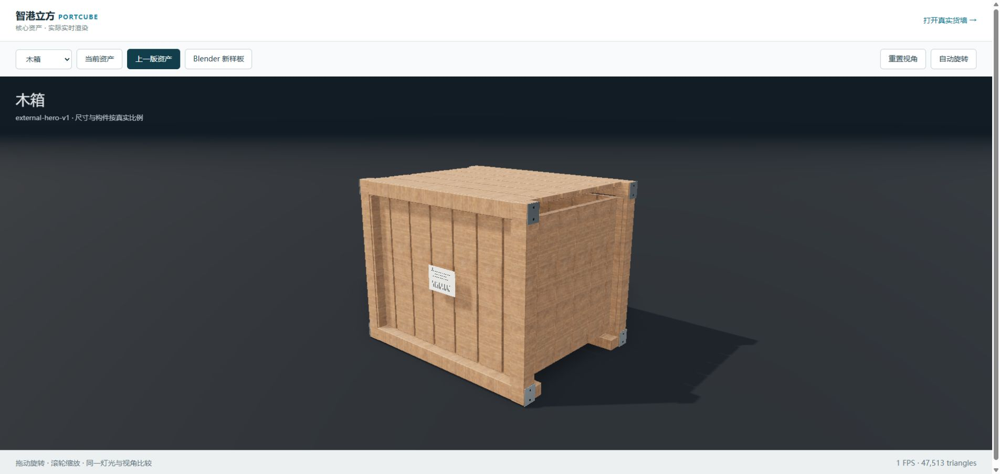
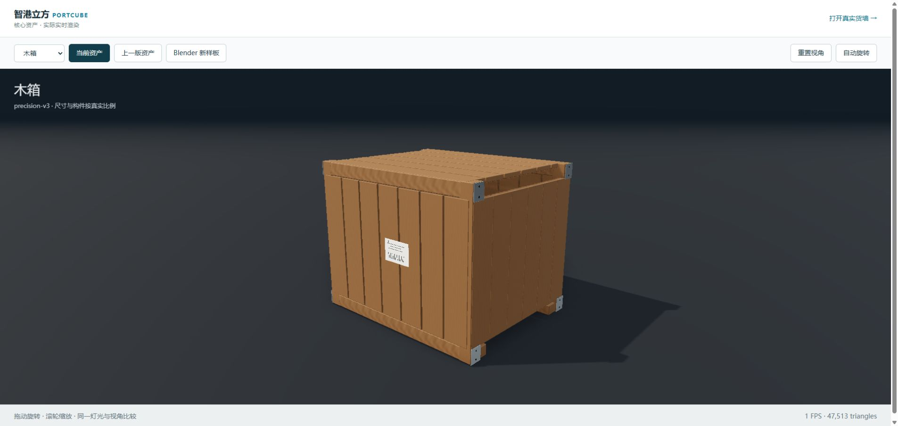
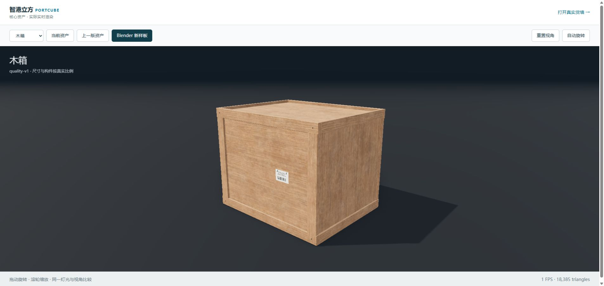
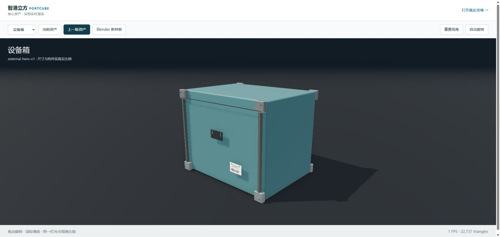
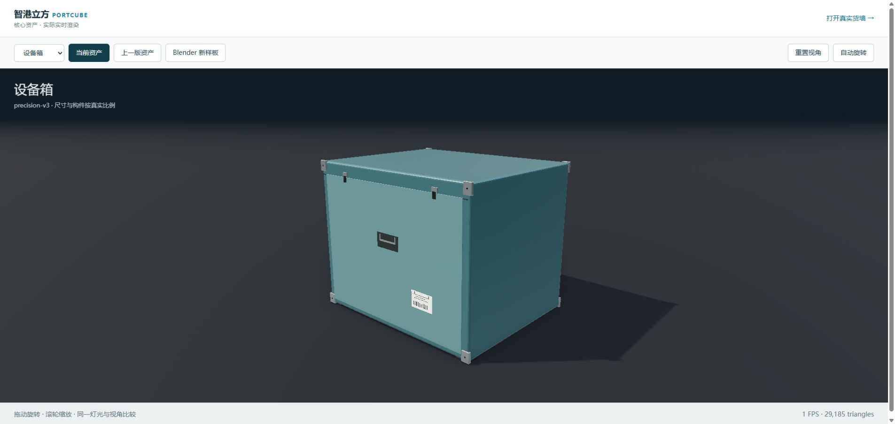
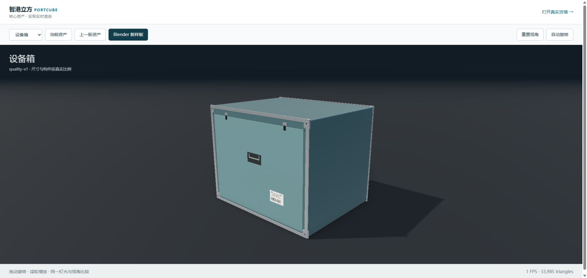
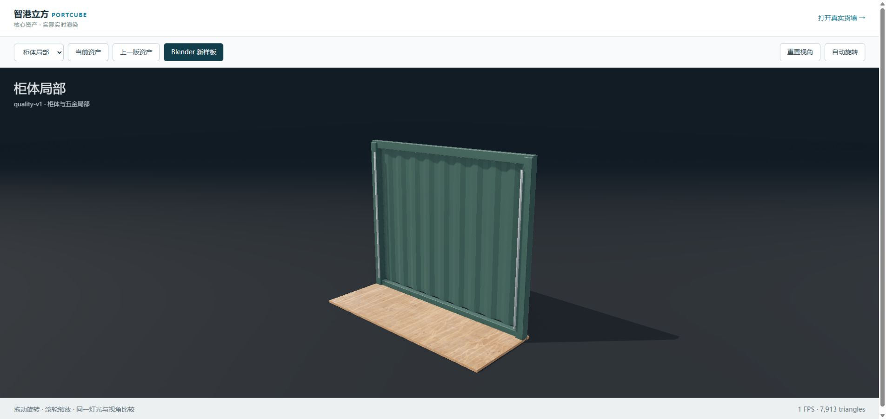
相同已有装载坐标与新光照参数，仅切换货物模型版本。
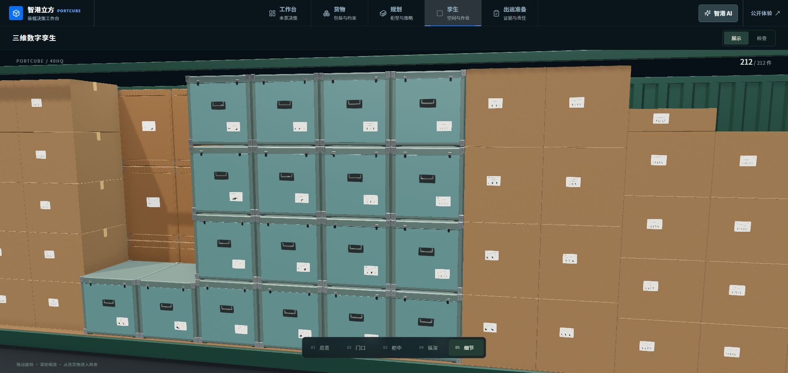
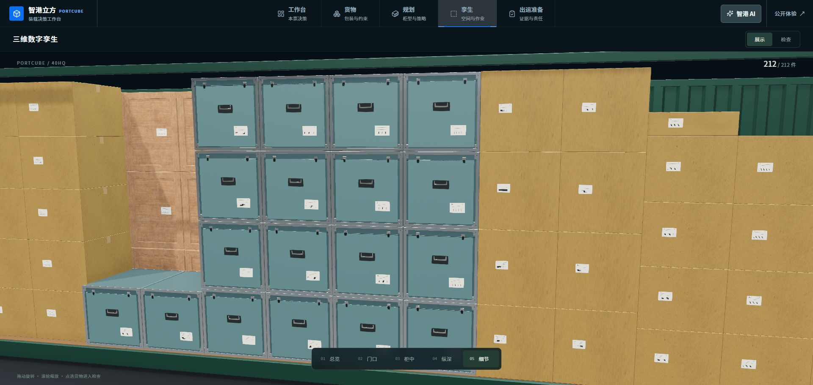
Renault 48→51 / 66 件，77.74%；WTPACK 59→61 / 75 件，84.04%；THPACK 50→54 / 69 件，79.25%。仍未全满，且暂不计承压与作业条件。
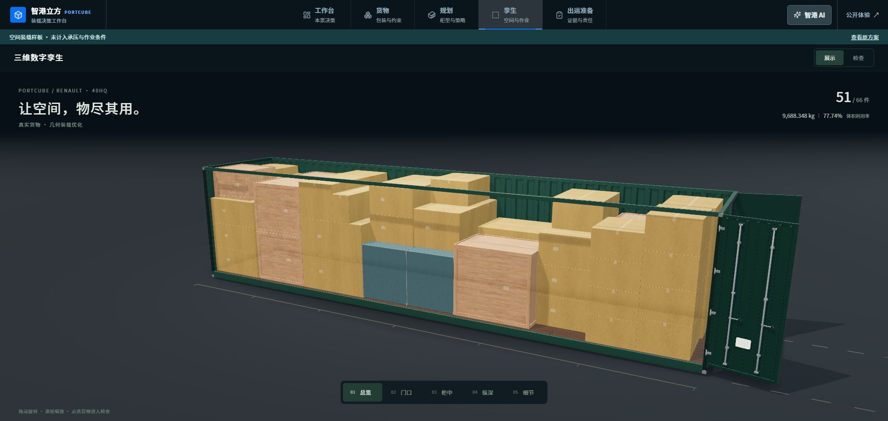